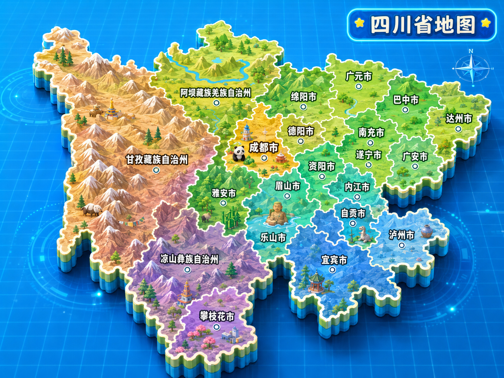
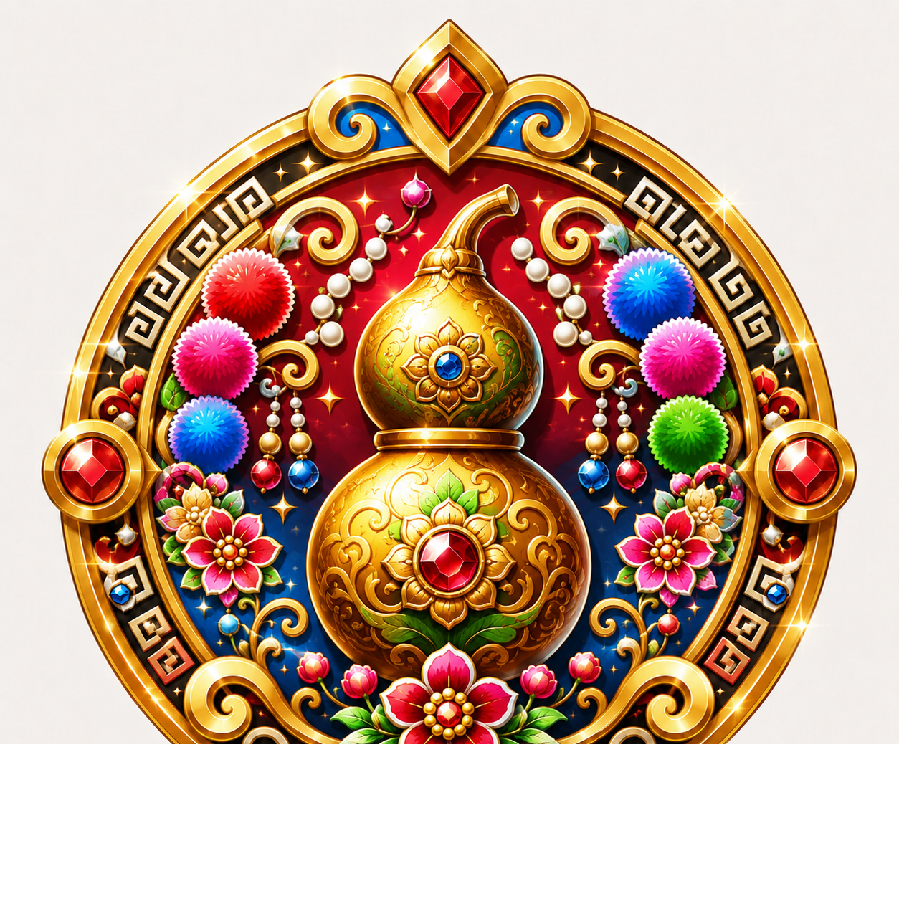
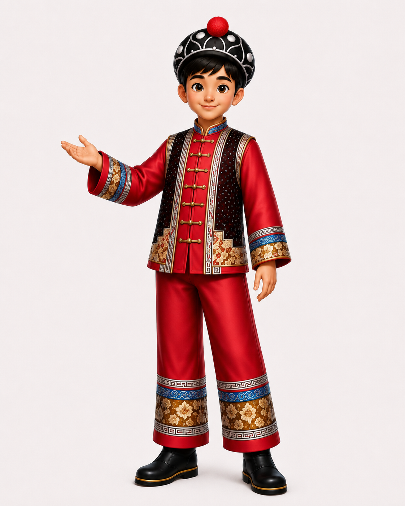
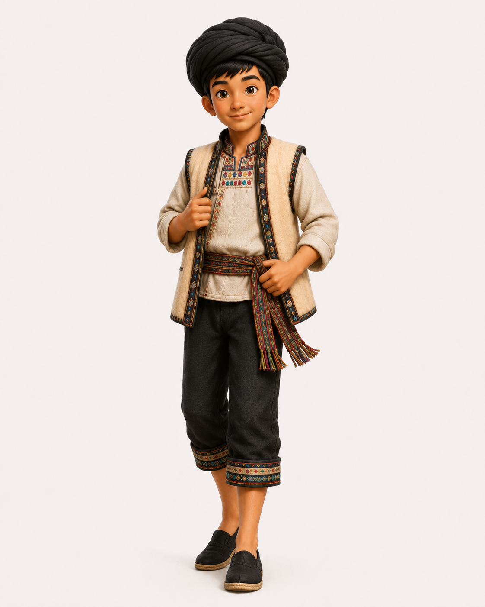
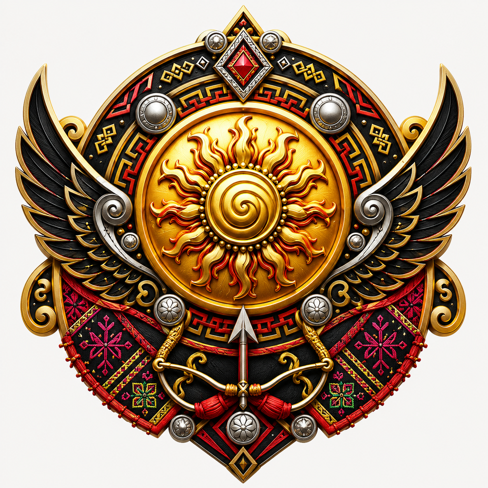
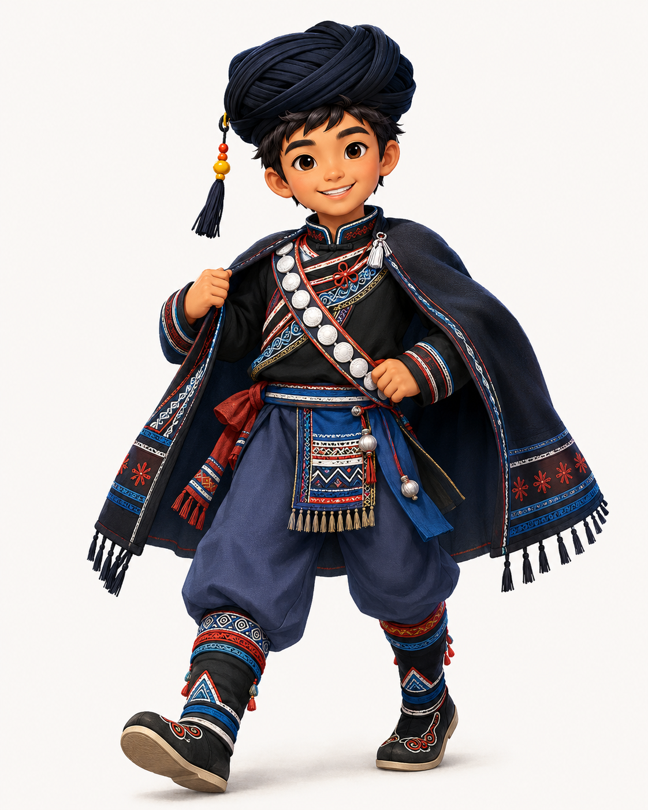
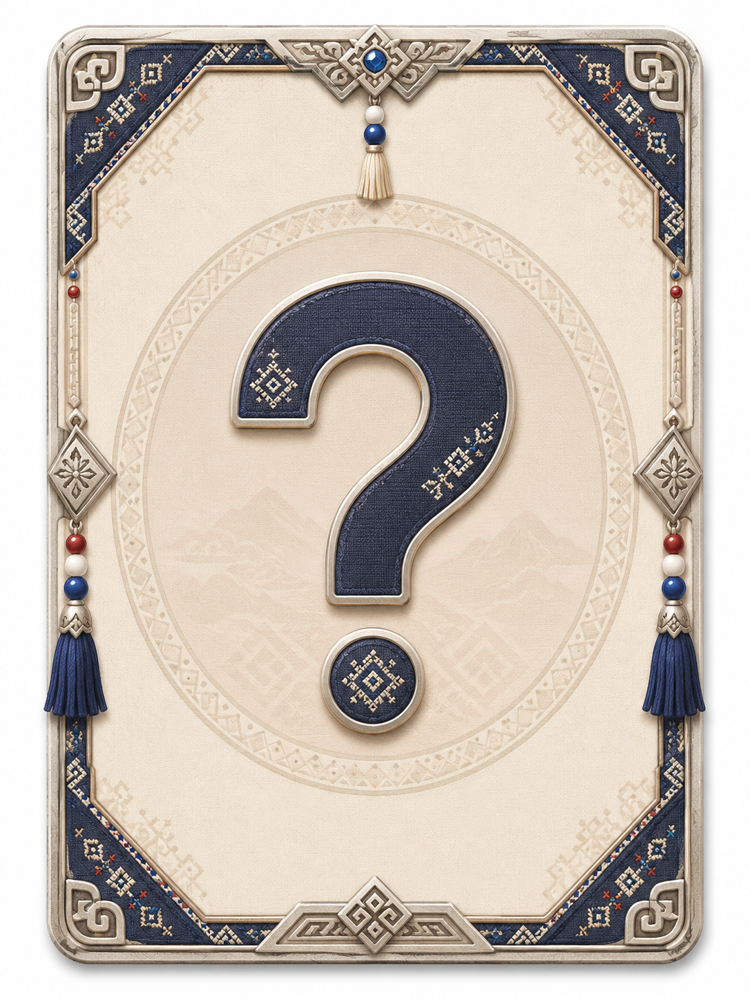
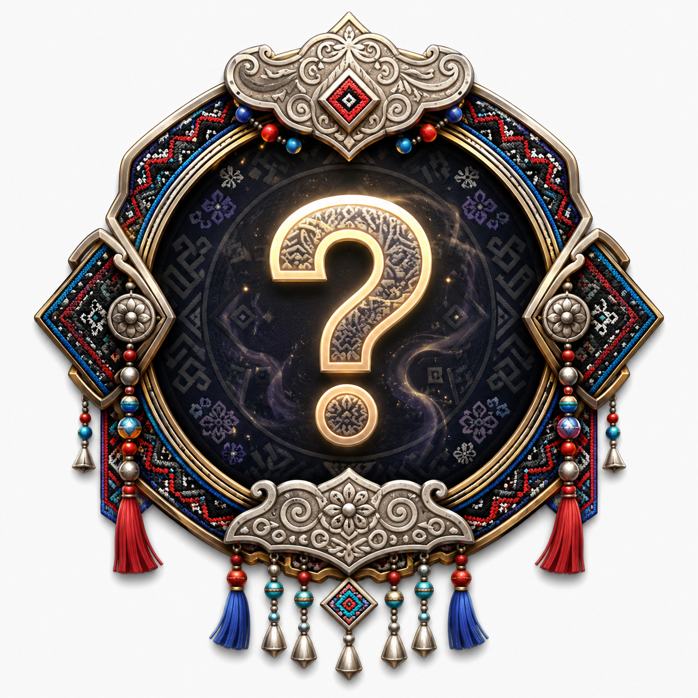

俚濮彝族 · 古乐守护
这枚徽章借用了葫芦意象：在俚濮彝族相关的洪水神话叙事中，祖先曾在大洪水中坐进葫芦里得以存活，生命和族群记忆由此延续。游戏把葫芦化作“古乐守护”的象征，它提醒你：谈经古乐不只是旋律，也是祖先故事、生命记忆和乡土文化一起留下来的声音
获得条件：俚濮彝族乐器知识小测正确率达到 80%
四川篇 · 四至六年级音乐文化探索游

旅行手册来到攀枝花市仁和区平地镇。古乐图鉴中的五件声音信物散落了，收集它们、读懂它们在合奏中的作用，才能重新点亮“俚濮谈经古乐”
“每件乐器都有自己的声音位置。竹笛、三弦、月琴、响篾和树叶都找到后，我们再让它们共同加入古乐图鉴！”
跟随人物对话推进故事，答对当前问题后解锁下一段
跟随小洛依次完成五个声音单元。当前单元回答正确后，下一段剧情才会解锁
已收集 0 / 5“最后一道机关开启了。别急着乱选，回想每件声音信物的位置、类别和发声方式，古乐图鉴会回应真正读懂它的人。
“听，五件声音信物已经重新合在一起了。你不只是答完了题，也把谈经古乐的一段记忆带回了图鉴。
五件声音信物已经归位。竹笛承担旋律，月琴填充中音，三弦支持低音；响篾与树叶展示了地方音乐里多样的声音材料

正确率达到 80% 后点亮，代表你已经掌握本关核心乐器知识

已放入你的服装衣柜，可以随时选择穿戴
旅行手册来到傈僳族音乐资料馆。这里留下了许多传统乐器的名字，但今天我们先聚焦仍较常见、适合本关探索的三件：起奔（期奔）、笛哩吐和葫芦笙（阿咪直陆）
“起奔用四根弦弹出旋律，笛哩吐用短竹管吹出歌声，葫芦笙（阿咪直陆）靠葫芦笙斗和竹管里的簧片发声。你能把这三件乐器的声音身份分清楚吗？”
跟随人物对话推进故事，答对当前问题后解锁下一段
跟随阿洛依次完成三个乐器单元。当前单元回答正确后，下一段剧情才会解锁
已收集 0 / 3“现在轮到你独自辨认了。看清楚题目里的关键词：四弦、短竹管、葫芦笙斗、簧片，它们会带你找到答案。
“很好，三件乐器的声音身份已经被你分清了。下一次听见它们，你应该能想起它们怎样发声、怎样进入族群的音乐生活。
你已经认识了起奔、笛哩吐和葫芦笙（阿咪直陆）三种乐器：一个弹拨、一个短竹管吹奏，一个由葫芦与竹管组合发声
正确率达到 80% 后点亮，代表你已认识起奔、笛哩吐和葫芦笙（阿咪直陆）

小测满分后放入角色衣柜
旅行手册来到大凉山。这里的彝族音乐与火把节、婚丧礼俗、放牧生产和日常情感紧紧相连。本关先认识三件代表性乐器：胡惹、马布、克西举尔，再通过两段视频探索，感受凉山彝族传统音乐的声音气质
“有的声音像山风一样悠长，有的声音像火把节的脚步一样热烈。先听、再看、再答题，我们把乐器的形状、发声方法和音乐场景一起记住。”
跟随人物对话推进故事，答对当前问题后解锁下一段
跟随阿支依次完成三段乐器剧情，再解锁两段视频剧情。当前单元完成后，下一段剧情才会亮起
已收集 0 / 3《朵洛荷》常被作为凉山彝族歌舞文化的代表性材料来欣赏，你可以观察队形、步伐、呼喊式衬词和集体歌舞氛围，理解传统音乐不只是“听”，也和节庆、身体动作、群体交流连在一起
《阿嫫妞妞》适合用来感受彝族歌曲中亲切、抒情的一面。你可以关注旋律走向、彝语演唱的音色，以及歌曲如何表达亲情、赞美和地方生活情感
“火光照到最后一关了。把乐器形态、发声方式和视频里的音乐场景连起来，答案就在你的旅行记录里。
“你已经把三件乐器和两段传统音乐收入旅程。大凉山的声音不会停在这里，它会继续在你的图鉴里回响。
你已经认识胡惹、马布、克西举尔，也完成了两段凉山彝族传统音乐试听

正确率达到 80% 后点亮。徽章中的太阳火焰、鹰翼、弓箭和黑红黄纹样，象征大凉山音乐里的光、勇气、守护与节庆生命力

小测满分后放入角色衣柜
旅行手册来到甘孜藏族自治州。雪山、草地、寺院和歌舞场在同一片风里回响：你要跟随新的音乐伙伴，先辨认三件藏族声音信物，再从视频里听见曲调与舞步的关系
“甘孜的声音，有的从弦上弹出，有的随弓弦歌唱，有的像雪山长风一样吹向远处。准备好把这些声音放进你的图鉴了吗？”
跟随人物对话推进故事，答对当前问题后解锁下一段
依次完成三段乐器剧情，再进入视频赏析。每个视频都需要点选“我已看完”并答对对应问题，才算完成
剧情进度 0 / 3《格桑拉》可作为认识藏族酒歌“昌鲁”的入口。酒歌常在喝酒、敬酒时唱起，也可以伴随简单舞蹈动作；在传统节日、婚礼等场合，歌声会和接杯、弹酒、饮酒、干杯等礼仪动作连接，表达祝福、祈祷、爱情与欢聚情感
巴塘弦子也常被称作巴塘弦子舞，是甘孜巴塘一带有代表性的藏族歌舞形态。赏析时不要只听旋律，还要观察弦乐伴奏、边唱边舞、队形变化、甩袖步伐，以及节奏从舒展到热烈的推进方式
“最后一关到了。把乐器的声音身份、舞蹈场景和曲目记忆串起来，雪山回声就会留在你的图鉴里。
“你已经把弦声、长号声和歌舞场景收进旅程。若能满分回应雪山回声，藏族服装也会进入你的衣柜。
你已经认识扎念（扎木聂）、毕旺、筒钦，也完成了两段视频赏析
这枚徽章化用了甘孜雪山、白牦牛、经幡、祥云、绿松石与藏式吉祥结纹样。雪山像康巴高原的远路，白牦牛呼应牧区生活里坚韧、珍贵、守护旅程的意象；五色经幡与风马旗把祝福交给山风，祥云像歌声越过山口。徽章下方的吉祥结纹样，则把扎念、毕旺、筒钦、《格桑拉》和巴塘弦子这些声音线索连成一条“雪域回声”的旅程

甘孜藏族音乐小测 100% 正确后，这套服装会放入角色衣柜
旅行手册来到阿坝藏族羌族自治州。白石守着寨口，碉楼看着云路，羌年的鼓声还在山谷里回旋。你要跟随新的音乐伙伴，找回羌笛、羊皮鼓和多声部歌声三枚“云朵寨声音信物”。
“旅行家，羌寨的声音不只在乐器里，也在祭山的鼓点、围火的萨朗和一声声山歌应答里。准备进寨了吗？”
跟随人物对话推进故事，答对当前问题后解锁下一段
依次完成三段音乐信物剧情，再进入视频预留单元。每个视频预留位需要“确认观看位 + 答对问题”两个条件，才算完成。
剧情进度 0 / 3羊皮鼓舞常与释比祭仪、祈福和羌年场景相连。欣赏时可以注意鼓点、舞步、持鼓动作以及祭仪氛围。
萨朗意为“唱起来、跳起来”，常见围火踏歌、领唱复唱和集体互动，适合让玩家理解音乐与身体动作、节庆生活的关系。
“最后一关到了。把羌笛、羊皮鼓、多声部歌声、羊皮鼓舞和萨朗舞串起来，云朵寨的声音门就会打开。”
“你已经把风笛、鼓点和山歌收进旅程。以后真实视频补上后，羊皮鼓舞和萨朗舞也会在这里完整响起。”
你已经认识羌笛、羊皮鼓、多声部民歌，也完成了两个舞蹈视频预留位的学习任务。

这枚徽章位置先用未知徽章占位。设定上它会化用白石、碉楼、云朵、羌笛和羊皮鼓：白石象征羌寨对神灵与山川的敬意，碉楼像守护村寨的高处眼睛，羌笛把山风吹成旋律，羊皮鼓把羌年和释比祭仪里的节奏敲醒。
阿坝羌族音乐小测 100% 正确后，这套服装会放入角色衣柜。当前先使用未知服装卡占位。
旅行手册翻到四川东南部，宜宾与泸州一带的山地苗寨正等着你。花山节的芦笙响起，木鼓敲醒山场，飞歌把高坡与溪谷连成一条回声路。你要跟随新的音乐伙伴，找回芦笙、木鼓和苗歌三枚“花山回声信物”，再为两首传统歌曲预留出欣赏位置。
“旅行家，苗寨把故事藏在歌里，也把节日藏在脚步和簧管里。只要你愿意听，山风都会替我们和你一起合唱。”
跟随人物对话推进故事，答对当前问题后解锁下一段。
依次完成三段音乐信物剧情，再进入两首传统歌曲的视频预留单元。每个视频位需要“确认视频位 + 答对观察题”两个条件，才算完成。
剧情进度 0 / 3飞歌常用高腔长音把情感送向远处山坡，适合引导玩家观察“声音如何在山场里飞起来”。
花山节相关歌曲常与芦笙、节庆装束、集体舞步和青年交往场景相连，适合帮助玩家理解音乐与习俗的关系。
“最后一关到了。把芦笙、木鼓、飞歌和花山节的线索串起来，花山上的那道风，就会替你把答案送回来。”
“你已经把簧声、鼓点和花山上的歌路收进旅程。等真正的视频补上后，这两首歌会在这里把苗寨的节日风景唱得更完整。”
你已经认识芦笙、木鼓、苗歌 / 飞歌，也完成了两首传统歌曲预留位的学习任务。
这枚徽章位置先用未知徽章占位。设定上它会化用花山、芦笙、蝴蝶纹和高山回声：花山象征节日与相会，芦笙把簧声吹进山场，蝴蝶纹呼应苗族“蝴蝶妈妈”等祖源叙事，飞歌则把祝愿和情感送向远方坡岭。
四川苗族音乐小测 100% 正确后，这套服装会放入角色衣柜。当前先使用未知服装卡占位。
选择后将获得对应的初始旅行装；通关奖励服装也会根据角色分别发放
你的服装会显示在左侧角色栏中
创建角色时获得，适合日常音乐旅行
乐器知识小测 100% 正确后解锁
傈僳族乐器小测 100% 正确后解锁
凉山彝族音乐小测 100% 正确后解锁
尚未获得该服装，还不清楚有什么具体内容哦。
藏族音乐小测 100% 正确后解锁
尚未获得该服装，还不清楚有什么具体内容哦。
完成各关卡的小测后，徽章会在这里被点亮。每一枚徽章都记录一段民族音乐背后的文化记忆
这枚徽章借用了葫芦意象：在俚濮彝族相关的洪水神话叙事中，祖先曾在大洪水中坐进葫芦里得以存活，生命和族群记忆由此延续。游戏把葫芦化作“古乐守护”的象征，它提醒你：谈经古乐不只是旋律，也是祖先故事、生命记忆和乡土文化一起留下来的声音
获得条件：俚濮彝族乐器知识小测正确率达到 80%
这枚徽章取意于傈僳族红蛇与红腰带传说：民间叙事常把红蛇、红色腰带和祖先护佑联系在一起，红腰带既是醒目的服饰标识，也寄托着族群记忆、勇敢守护和吉祥祝愿。放在本关中，它象征你认识起奔、笛哩吐、葫芦笙（阿咪直陆）之后，也把傈僳族乐器背后的文化身份系在了心里
获得条件：傈僳族乐器知识小测正确率达到 80%
这枚徽章把凉山彝族的太阳火焰、鹰翼、弓箭与黑红黄纹样组合在一起：中心太阳和火焰呼应火把节中以火驱邪、祈愿丰收的传统；弓箭连接彝族英雄神话里“射日”和守护族人的勇敢意象；鹰翼象征大凉山高地、飞翔与守护；黑、红、黄和刺绣几何纹样则呼应彝族服饰中常见的色彩与装饰传统。获得它，代表你把凉山彝族音乐里的热烈、勇气和山地回声收入了图鉴
获得条件：凉山彝族乐器与视频探索小测正确率达到 80%
尚未获得该勋章，还不清楚有什么具体内容哦。
获得条件：后续羌族关卡开放后可挑战
这枚徽章化用了甘孜雪山、白牦牛、经幡、祥云、绿松石与藏式吉祥结纹样。雪山像康巴高原的远路，白牦牛呼应牧区生活里坚韧、珍贵、守护旅程的意象；五色经幡与风马旗把祝福交给山风，祥云像歌声越过山口。徽章下方的吉祥结纹样，则把扎念、毕旺、筒钦、《格桑拉》和巴塘弦子这些声音线索连成一条“雪域回声”的旅程
获得条件：甘孜藏族音乐小测正确率达到 80%。
尚未获得该勋章，还不清楚有什么具体内容哦。
获得条件：后续苗族关卡开放后可挑战
新的奖励已经放入你的图鉴。